Merge Hell - and how to avoid it
Collaboration on large projects in
modern software development
Collaboration
What is it? And why should you care?
It's about getting things done - better together!
Aspects of collaboration
On Organization level: it's all about (infra)structure and workflows
On Code level: it's about tools ... and workflows
Workflows and tools ...
- ... can increase efficiency and improve quality.
- ... can foster a great culture.
- Culture of Innovation.
- Culture of Collaboration.
- Tools can help to foster and grow new ideas
- explore, understand, diagnose, analyse, model, create, invent, solve, communicate and implement
=> find the right mix!
Tools
Some of the tools we use at Parkside:

Proven concepts
Feature branch workflow
- Create feature branch from master
- Use rebase to keep branch up to date (at least once a day)
- Code-reviews
- Branch-specific QA
- Deploy
- Merge to master
- Alternative: Git-Flow
Merge Hell
How did we end up here?
- Long running branches
- Epic branches
- Stale branches
The Big Picture
The magic
- Git commit hook => triggers CircleCI build
- CircleCI builds artifacts => new container image
- Image is pushed to GCP registry
- Kubernetes hot-swaps image on running cluster
- Status messages are send to Slack
Git SHA:
PS_VERSION_NUMBER
Kubernetes Cheatsheet
# configure gcloud cli components
gcloud auth login
gcloud config set project ps-tec-17
gcloud container clusters get-credentials cluster-ps-tec-17
gcloud config set container/cluster cluster-ps-tec-17
# build docker image and test it
docker build -t "eu.gcr.io/ps-teconomy-2017/ps-tec-17:latest" .
docker run -p 80:8000 eu.gcr.io/ps-teconomy-2017/ps-tec-17:latest
# push image to GCP registry
gcloud docker — push eu.gcr.io/ps-teconomy-2017/ps-tec-17:latest
# create deployment and service
kubectl run demo --image=eu.gcr.io/ps-teconomy-2017/ps-tec-17:latest --port 8000
kubectl expose deployment demo --type=LoadBalancer --port 80 --target-port 8000
# update image
kubectl set image deployment/demo demo=eu.gcr.io/ps-teconomy-2017/ps-tec-17:latest
Chris Werding
- VP of Engineering
5 years @ Parkside
- Team Lead / Software Architect / Project Manager
- Dotnet / Java / Javscript / Scalability / Architecture / Design Patterns
Nelle Simic
- Principal Software Engineer
12 years @ Parkside
- Software Architect / Guru / Engineer / Consultant
- Java / Algorithmics / React / AngularJS / Graphics Engineering
We are Parkside
45+ employees / 15 nations / 10 languages / international clients / large-scale projects / headquarters @Graz
tl;dr
- Work with nice people
- Communicate a lot
- Use great tools
-
Do amazing things
- https://github.com/chriwu/ps-tec-2017
danke / thank you / kiitos / merci
hvala / gracias / obrigado
Parkside is hiring
https://parkside.at/en/careers
work@parkside.at